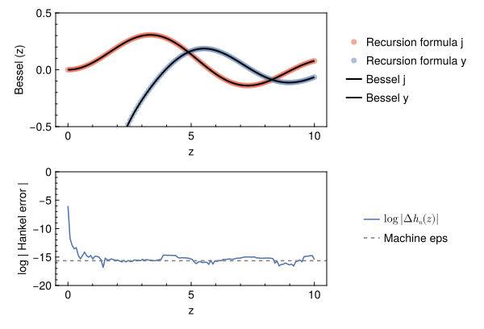
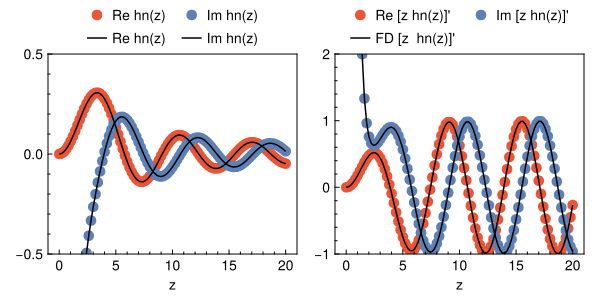
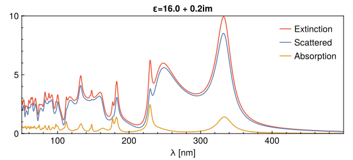
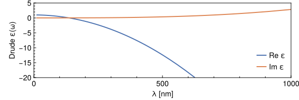
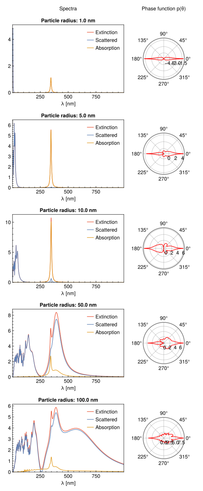

Tutorial for how to calculate the absorption of light for spherical nanoparticles.
Build Bessel and Hankel functions
The objective is to calculate the extinction, scattering, and absorption spectra using Mie theory, for which we will need the spherical Bessel functions $j_n$. They are the following:
$$ \begin{align} j_0(z)&=\frac{\sin(z)}{z},\\ j_1(z)&=\frac{\sin(z)}{z^2} - \frac{\cos(z)}{z}, \end{align} $$
and then using the recursion formula $$ j_{\nu+1}(z)=\frac{2\nu+1}{z}j_\nu-j_{\nu-1},\quad \nu \geq 1 $$
which is all we need for the program. The scattering coefficients do not require negative order Bessel functions. Similarly for the Bessel function of the second kind,
$$ \begin{align} y_0(z)&=-\frac{\cos(z)}{z}\\ y_1(z)&=-\frac{\cos(z)}{z^2}-\frac{\sin(z)}{z}. \end{align} $$ They follow the same recurrence as $j_n$. We actually need the travelling wave solutions of the Bessel equation, i.e. $$ h^{\pm}_n(z)=j_n(z)\pm i y_n(z) $$
Building recursion formulas will save you a TON of time since normally using hypergeometric special functions take longer to run! (although sometimes they can be harder to converge, like with Weber functions).
Recursive formula is useful because we can allocate an array for $N$ discretized-functions that we will use later in a summation involving $$ \sum_{n=1}^\infty f_n\approx \sum_{n=1}^{N}f_n;, \quad N\gg 1. $$ In other words, our lowest order for functions is $\nu=1$, and the highest will determine the best accuracy of the method.

Built-in method probably evaluates $\Gamma$ function, which is why it takes longer (although mine fails a bit near the origin, but we don’t really care about the origin). Not only that, we need to evaluate for every $\nu$, which calls the function many times (bad). A useful (and free) scientific library to use is GSL, which has similar functions to the one I implemented. I get higher memory usage in my version because of the extra stored space for the previous functions ${j_0, j_1, \dots, j_n}$.
The derivative of the Bessel spherical functions can be written, for any $j_n$ or $h^{(1)}_n$ as (see here for details)
$$ f_{n+1}’(z)=f_{n}(z) - \frac{n+2}{z}f_{n+1}(z), $$
and thus
$$ \begin{align} [zf_{n}(z)]’&=f_{n}(z)+zf_{n}’(z),\\ &=f_{n}(z)+zf_{n-1}(z)-(n+1)f_{n}(z),\\ &=zf_{n-1}(z) -nf_{n}(z). \end{align} $$
We compare the result with a finite-difference evaluation

Mie Coefficients
We calculate $$ \begin{align} a_n(\omega; x) &= \frac{ m^2[x j_n(x)]‘j_n(mx)-j_n(x)[mx j_n(mx)]’ }{ m^2[x h_n(x)]‘j_n(mx)-h_n(x)[mx j_n(mx)]’ }, \end{align} $$
and
$$ \begin{align} b_n(\omega; x) &= \frac{ j_n(mx)[x j_n(x)]’-j_n(x)[mx j_n(mx)]' }{ j_n(mx)[x h_n(x)]’-h_n(x)[mx j_n(mx)]' }, \end{align} $$
with $m=n_1/n$, $x_1=mx$, and $x=ka=2\pi a n/\lambda$. We then iterate through $\lambda$. Setting N_max to 17 already gives good results.

Mie scattering for Drude permitivitty
Essentialyl the same as before, we just modify the $mx$ vector to include the permitivitty dependence, i.e. $m(\varepsilon) x$. With the help of some more functions (see the Appendix), we can visualize pretty well at what wavelengths the nanoparticles absorb light.
Recap of Drude model
Let $\varepsilon_\infty$ be the background permitivitty. Then, starting with
$$ \mathbf{D}=\mathbf{E}+4\pi \mathbf{P}=\varepsilon(\omega)\mathbf{E}, $$
whereby solving the telegraph equation (EM waves in conductive medium) we get that
$$ \begin{align} k^2&=\varepsilon_\infty\frac{\omega^2}{c^2}+\frac{4\pi\sigma i\omega }{c^2}=\frac{\omega^2}{c^2}n^2, \end{align} $$
and so by the refractive index we get the meaning for the permittivity,
$$ n^2=\varepsilon(\omega)= \varepsilon_\infty +\frac{4\pi i\sigma(\omega)}{\omega}. $$
Then, using the Drude conductivity, we get
$$ \begin{align} \frac{i\sigma(\omega)}{\omega}&=\frac{i}{\omega}\frac{\sigma_0}{1-i\omega \tau},\\ &=\frac{i\sigma_0}{\omega-i\omega^2\tau},\\ &=-\frac{\sigma_0}{i\omega+\omega^2\tau},\\ &=-\frac{\sigma_0}{i\omega+\omega^2\tau}, \end{align} $$ wherein $\sigma_0=n_ee^2\tau/m_e$, $$ \begin{align} &=-\frac{n_ee^2}{m_e}\frac{\tau}{i\omega+\omega^2\tau},\\ &=-\frac{n_ee^2}{m_e}\frac{1}{i\omega\tau^{-1}+\omega^2}. \end{align} $$ Therefore, we have
$$ \begin{align} \varepsilon(\omega)&=\varepsilon_\infty-\frac{4\pi \frac{n_ee^2}{m_e}}{i\omega\tau^{-1}+\omega^2},\\ &=\varepsilon_\infty-\frac{\omega_B^2}{i\omega\tau^{-1}+\omega^2}, \end{align} $$
Where we identify $\omega_B$ as the Plasma frequency. In other words, for every $\omega$ (i.e. for every $\lambda$) we have a different $\varepsilon$, from which we get the refractive index $n=\sqrt{\varepsilon}$. We calculate $\omega$ through
Note that we started with Gaussian units, but the result is independent of such choice (although the units and value of $\omega_B$ will change).


Appendix: Lorenz-Mie theory
From chapter 4 in The Mie theory: basics and applications. Springer, 2012., the phase function $p(\theta)$ is a normalized distribution of scattered light, useful for quantifying radiative transfer,
$$ p(\theta)\propto |S_1|^2+|S_2|^2\quad (\text{unpolarized light}), $$
Lorenz and Mie showed that for spherical symmetry,
$$ \begin{align} S_1(\theta) &= \sum_{n=1}^{\infty} \frac{2n+1}{n(n+1)}\Big( a_n ,\pi_n(\theta) + b_n ,\tau_n(\theta) \Big),\\ S_2(\theta) &= \sum_{n=1}^{\infty} \frac{2n+1}{n(n+1)}\Big( a_n ,\tau_n(\theta) + b_n ,\pi_n(\theta) \Big), \end{align} $$
with $\pi_n(\theta)=P_n^1(\cos(\theta))/\sin(\theta)$, and $\tau_n(\theta)=\partial_\theta P_n^1(\cos(\theta))$.